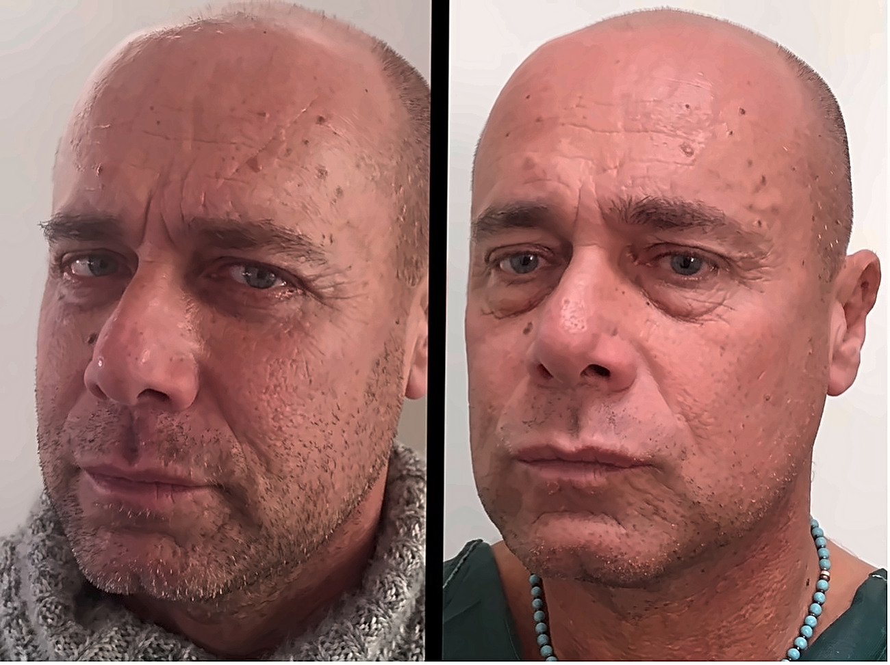

Fotografie di casi reali. I risultati variano da persona a persona.
Il cambiamento che i pazienti descrivono dopo un intervento alle palpebre è raramente drastico. Gli amici notano un aspetto più riposato, ma spesso non sanno dire esattamente perché. Lo sguardo è più aperto, l’espressione più distesa, senza che nulla faccia pensare a un intervento. È proprio questa la finalità: ringiovanire lo sguardo con naturalezza, senza alterarne l’identità.
L’età non è l’unico fattore. In alcune persone, la predisposizione ereditaria può rendere le palpebre pesanti o prominenti molto prima di quanto ci si aspetterebbe.
L’intervento è soprattutto una questione di precisione. Si rimuove la pelle in eccesso, si riposiziona o si riduce il grasso che tende a protrudere e, quando necessario, si interviene sulle strutture che contribuiscono alla pesantezza dello sguardo. Le palpebre superiori e inferiori possono essere trattate insieme o separatamente, a seconda di ciò che determina realmente il problema.
Le palpebre occupano una posizione centrale nel viso, dove anche una differenza di pochi millimetri può risultare immediatamente evidente. Una blefaroplastica ben pianificata lascia intatta la forma dei Suoi occhi; ciò che cambia è quanto il Suo sguardo appare riposato.
Quale approccio sia più adatto a Lei dipende dalla Sua anatomia e dalle caratteristiche dei tessuti. Il Dr. Roberto Uccellini potrà stabilirlo correttamente solo dopo averLa visitata personalmente.